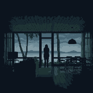
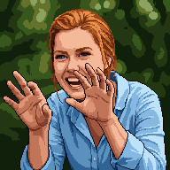
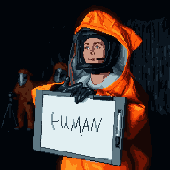
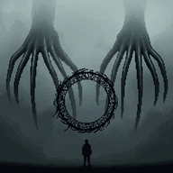
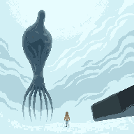

Ten quotes from the film are listed below. Some are Louise’s and some belong to other characters. Your job is to identify her voice.
For Louise, word choice is character. Below are five moments from the film; fill in her exact words.

But now I’m not so sure I believe in NOUN ▾ and NOUN ▾. There are days that define your story beyond your NOUN ▾.

Stick ‘em up! Are you the NOUN ▾ in this here town? These are my NOUN ▾ guns, and I’m gonna getcha!

They need to VERB ▾ PRN ▾.

We don’t know if they understand the difference between a NOUN ▾ and a NOUN ▾. Our language, like our NOUN ▾, is messy, and sometimes, one can be both.

I don’t VERB ▾… Who is this NOUN ▾?
Use Louise’s word choices to describe who she is.
Louise’s verbs and nouns are the clue. Use them to work out what she wants.
Storytelling is driven by characters facing and overcoming conflict. Describe Louise’s.
Louise already knows how every conversation ends. Pick a scenario below and write her words using her vocabulary.